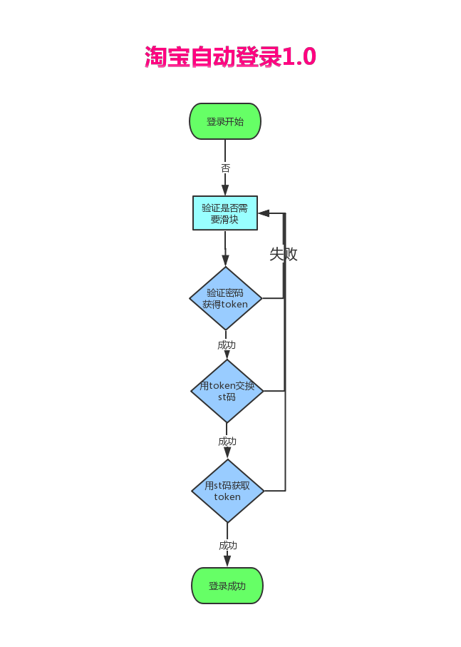

前段时间时间为大家讲解了如何使用requests库模拟登录淘宝，而今天我们将对该功能进行丰富。所以我们把之前的那个版本定为1.0，而今天修改的版本定为2.0。版本的地跌意味着功能的升级，那今天的2.0版本较之前的1.0版本有哪些改进呢？我们一起来看看！
我们先来回顾一下模拟登录淘宝的步骤吧，我们还是先看看淘宝登录的详细时序图：
这是淘宝网登录的一个请求流程，而我们模拟登录也是根据这样的一个流程。但是在代码模拟登录的时候就不会分的这么细，我们根据封装的思想将整个登录流程封装在四个方法里面，可以看看下图。
为了便于大家理解四步登录法，猪哥又画了一个流程图给大家看看

结合流程图，给大家简单 的 再讲解一遍这四步具体做了啥：
在面试的 时候也许面试官会问你是否爬取或自动登录过淘宝，流程是怎么的？大家 就这个把这个四步登录法讲给面试官听 ，面试官不仅不会你的技术认可，也为夸张你的逻辑思维缜密！
为什么要做2.0版本？因为猪哥在做爬取淘宝商品的时候发现之前登录有一个很不方便的 地方：每次程序运行完后，登录的cookies就没了，也就是说下次又要重新登录。
而浏览器却可以保存cookies信息，所以猪哥自然的想到了：将cookies序列化。
序列化 (Serialization)是将对象的状态信息转换为可以存储或传输的形式的过程。——百度百科
简单说序列化就是将对象持久性保存起来，因为原来对象是在内存中，程序运行完了就要释放内存，所有的对象、变量等都会被清除，而序列化则可以把他们保存到文件。即使程序关闭了，下次启动的时候可以读取文件到内存转回对象继续使用，而这个过程叫反序列化。
所以我们2.0的功能就是：将登录后的cookies保存到文件中，下次再登录先从cookies文件读取！也就是增加了一个保存cookies 的功能，我们再看看2.0的流程图。
与1.0的流程图相比，其实就多了左边的cookies文件和cookies文件的校验，这也就是我们今天要讲的内容！
别看只是增加了一点点功能，却意义重大：因为这是一个 授人予渔的功能，你学会之后其他所有的登录都可以做序列化保存cookies，而且还可以做cookies池！
根据上面的流程图，我们可以简单的分析量化一下增加的保存cookies这个共功能：
根据以上三步，我们就可以开始撸代码了
保存cookies其实就叫序列化，我们先来看看代码：
我们先获取cookies，然后再转为dict对象，最后将dict转化为json对象保存起来！
读取cookies就是将文件转转化为cookies对象，这一步叫反序列化，直接上代码：
其实反序列化就是与序列化的步骤相反，先将文件转化为dict对象，然后再转化为cookies对象，最后赋值给Session对象！
这一步我们需要先判断cookies文件是否存在，如果存在则读取cookies，之后再访问淘宝主页看看是否能成功，如果失败则说明cookies已过期，我们就删除cookies文件。
功能点实现之后我们看看怎么重构代码，根据流程图，我们需要在方法开头增加加载cookies的功能，再最后登录成功的时候增加保存cookies的方法，所以改动只有两处！
在我们实际开发工作中 ，测试是一项非常重要的步骤。一般开发都需要先自测，如果不自测就直接提测的话，测试测出bug你不仅会被怼被鄙视有些公司还会影响你的kpi。
我们来说说序列化cookies功能自测的流程吧：
第一次登录是没有cookies文件的，所以正常使用用户名和密码登录，登录成功后保存cookies文件。
再正常登录之后，保存了cookeis文件，这里我们要测试是否能成功加载文件中的cookies。
大家都知道cookies都会有一个过期时间，而经过猪哥测试淘宝登录的过期时间为xx分钟！cookies过期之后我们需要重新登录然后重新保存cookeis文件。
至此所有的功能点 已经自测完毕，这时候就可以提测给测试人员，而测试人员测试通过之后，便可以上预发环境测试，预发测试通过之后才是正式环境！
现在一般的小功能都在白天发布了，而比较大的改版还是会安排在深夜，用户少的时候！
今天我们学习了如何保存登录信息，下期猪哥将会教大家如何爬取淘宝商品信息并做数据分析，还是挺有意思的，期待吧！
看到很多同学会在学习群里交流一些猪哥以前写的案例，感觉自己做的这些教程有意义，看到大家在学习，猪哥心里超开心！
获取淘宝自动登录源码，请关注vx公众号「裸睡的猪」回复 淘宝登录